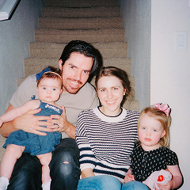

A Place Rooted in Memories
Shore Guesthouse is a dream come true, a labor of love inspired by the childhood summers I spent here with my grandparents. Their stories of Oia, the warmth of the island life, and the magic of this place have always stayed with me. Restoring this home has been a way to honor their memory and share the spirit of Oia with others. Oia is a living, breathing village. Wander the streets and you'll find hidden courtyards and locals chatting over coffee. Skip the fancy restaurants and enjoy today’s catch at a family-run taverna. Catch the sunset for a moment of peace. And, if you can, strike up a conversation with a local – they’ll tell you stories of Oia that no guidebook can.
The Art of Slowing Down
At Shore Guesthouse, we believe that the most meaningful journeys are not just about the places we visit, but the moments we experience along the way. Nestled in the heart of Oia, our guesthouse is more than a place to stay — it's an invitation to slow down, reconnect, and embrace the simple beauty of island life. Wake up to the soft Mediterranean light, enjoy a quiet morning with a cup of coffee, and let the winding streets lead you somewhere unexpected. Here, time seems to move a little differently. Every corner holds a story, every sunset feels like a celebration, and every encounter offers a glimpse into the traditions that make this village so special.


At Shore Guesthouse, every little detail is inspired by the warmth and simplicity of island living. From sunlit corners and natural textures to the peaceful atmosphere that surrounds you, we've created a space where comfort and authenticity come together. Here, the beauty lies in slowing down, appreciating the small moments, and feeling connected to the place around you.

Memories Made by the Sea
There's something unforgettable about the rhythm of life in Oia. The gentle sea breeze, the golden afternoon light, and the quiet charm of its winding streets make every day feel a little different. Whether you're exploring the village or simply enjoying a peaceful moment overlooking the Aegean, we hope your time here becomes a collection of memories you'll carry with you long after you've left.
And that's the heart of Shore Guesthouse — a place shaped by memories, love, and a deep connection to this beautiful island. Thank you for taking the time to get to know our story. We hope to welcome you someday, share a little piece of Oia with you, and make you feel as much at home here as we always have.